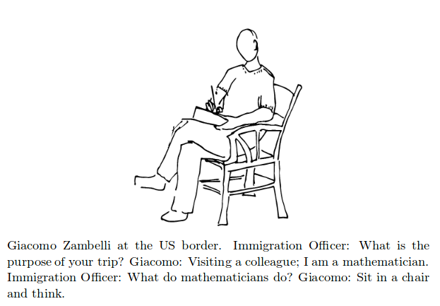

Mathematically, my research lie on Algebraic Combinatorics, Topological Graph Theory and Optimization. Furthermore, I have an ample experience dealing with economical and technological problems, ranging from implementing optimization models for the mexican central bank to creating video games for Android, as well as, simulating 3D RNA recombination.
Published papers
11. Small clique number graphs with three trivial critical ideals (with C. E. Valencia) accepted in Special Matrices.
10. On two-quotient strong starters for F_q (with Christian Rubio-Montiel and Adrián Vázquez-Ávila) accepted in Utilitas Mathematica [https://arxiv.org/abs/1609.05496].
9. Ciritcal ideals of digraphs (with Carlos E. Valencia and Adrián Vázquez-Ávila) accepted in Matemática Contemporânea. Presented in VII Latin American Workshop on Cliques in Graphs, November 8-11 2016.
8. The crossing number of the cone of a graph (with Alan Arroyo, Marek Derňár and Bojan Mohar) accepted in SIAM Journal of Discrete Mathematics [https://arxiv.org/abs/1608.07680].
7. Digraphs with at most one trivial critical ideal (with Carlos E. Valencia & Adrián Vázquez-Ávila) in Linear and Multilinear Algebra, 2017. [https://arxiv.org/abs/1703.08621]
6. Critical ideals of graphs with twin vertices (with H. H. Corrales & Carlos E. Valencia) in Advances in Applied Mathematics, 2017 [http://arxiv.org/abs/1504.06257].
5. The crossing number of the cone of a graph (with Alan Arroyo, Marek Derňár and Bojan Mohar), in Lecture Notes in Computer Science vol. 9801, 2016. Presented in Graph Drawing'16 by Bojan Mohar (slides).
4. Graphs with few trivial critical ideals (with Carlos E. Valencia), in Electronic Notes in Discrete Mathematics, 2015. Presented in LAGOS'15.
3. Graphs with two trivial critical ideals (with C. E. Valencia), in Discrete Applied Mathematics, 2014. [http://arxiv.org/abs/1304.4211]
2. Dimension Reduction in Principal Component Analysis for Trees (with B. Aydin, E. Bullitt, A. Ladha, and C. E. Valencia), in Computational Statistics & Data Analysis, 2014. [http://arxiv.org/abs/1202.2371]
1. On the sandpile group of the cone of a graph (with C. E. Valencia), in Linear Algebra and its Applications, 2012. [http://arxiv.org/abs/1004.3321]
Submitted papers
On a problem of Henning and Yeo about the transversal number of uniform linear systems whose 2-packing number is fixed (with A. Vázquez-Ávila) submitted.
On linear systems in which the transversal number equals the 2–packing number (with G. Araujo-Pardo, C. Rubio-Montiel, A. Vázquez-Avila) submitted.
Covering and 2-packing numbers in graphs (with Christian Rubio-Montiel and Adrián Vázquez-Ávila) submitted.
Optimizing the production cost of minting with mixed integer programming (with J. Aguilera, C. Guadarrama, R. Martinez-Noriega & A. Sanchez-Flores) submitted.
Critical ideals, minimum rank and zero forcing number (with Jephian C.-H. Lin) submitted.
Distance ideals of graphs (with L. Taylor) submitted.
Graph classes for critical ideals, minimum rank and zero forcing number, submitted.
